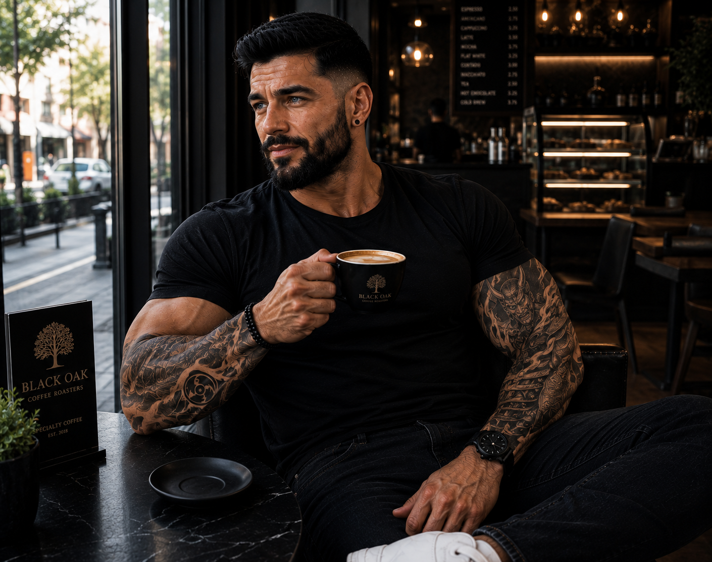

Família
Idade
Conexões
Papel na história
Registro de pessoal // DD-01
Fichas recuperadas de todos os envolvidos no incidente — famílias, comando militar e Pentágono. Clique em qualquer ficha para abrir o registro completo.

SUBJECT_01 // FBINerd, reservado e apaixonado por tecnologia. Desde jovem, enfrenta valentões e protege quem não consegue se defender.
O centro de gravidade da família. [rascunho — aguardando mais detalhes]
Carrega a expectativa silenciosa de cuidar das irmãs quando o pai não puder.
Classificado[rascunho — aguardando detalhes]
ClassificadoO motivo pelo qual os outros encontram forças pra continuar.
ClassificadoToma decisões que custam vidas todo santo dia — e sabe que vai carregar cada uma delas.
Vivo[rascunho — aguardando detalhes]
ClassificadoO peso de decidir o que revelar, e quando.
ClassificadoPapel na história